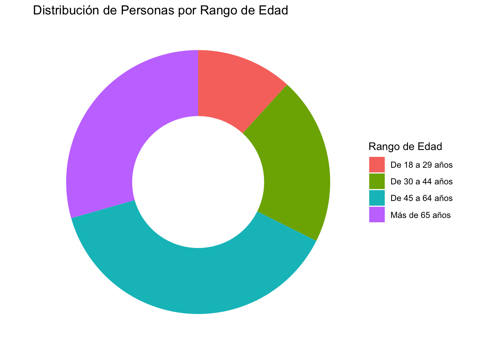

data_original <- read_csv("actual_adopcio.csv")ENTREGA 1 Análisis de Datos
Descripción de los datos
Se han recogido datos de los animales en adopción del Centre d’Atenció d’Animals Domèstics de Terrassa.
Sea data_original el data frame obtenido. Su dimensión es de 106 filas y 14 columnas.
Hay 106 animales registrados.
De cada uno se indica año de referencia, código de referencia, edad en años y meses, fecha de entrada, raza, si es peligroso, sexo, capa de color, tamaño, nombre, observaciones y link con foto del animal.
Para el estudio, consideramos los 106 individuos y las 6 variables siguientes:
Edad
La edad es dada en años y meses (ej: 1 año y 3 meses). La guardamos en meses (ej: 15 meses). Es una variable numérica.
Fecha de entrada
Fecha de entrada al centro, en formato AAAA/MM/DD.
Raza
Es un factor. Hay 10 categorías, 9 razas definidas y 32 animales con raza indefinida (INDE).
Las 9 razas conocidas son:
PIT BULL TERRIER AMERICÀ (PITB)
AMERICAN BULLY (AMBU)
STAFFORDSHIRE TERRIER AM. (STAR)
BULL TERRIER (BULL)
MASTI (MAST)
ROTTWEILER (ROTT)
EUROPEA (EURO)
PASTOR BELGA (PBEL)
PASTOR ALEMANY (PALE)
Peligroso
Es un factor. Hay dos categorías: Sí (S) y No (N).
Sexo
Es un factor. Hay dos categorías: Macho (M) y Hembra (F).
Tamaño
Es un factor. Hay dos categorías: Grande (G) y Mediano (M).
Tabla ordenada
Trabajaremos con la tabla de datos ordenados data_animales, de dimensión 106 filas y 6 columnas.
data_animales = subset(data_original, ,c("EDAT", "DIA_ENTRADA", "CODI_RACA", "PERILLOS", "SEXE", "TAMANY"))| EDAT | DIA_ENTRADA | CODI_RACA | PERILLOS | SEXE | TAMANY |
|---|---|---|---|---|---|
| 104 | 2018-01-12 | PITB | S | M | G |
| 109 | 2021-08-05 | INDE | S | F | M |
| 88 | 2020-04-17 | INDE | N | M | M |
| 87 | 2021-05-24 | INDE | S | M | G |
| 79 | 2019-07-03 | INDE | S | F | G |
| 107 | 2019-10-07 | AMBU | S | M | M |
Análisis
Representamos gráficamente cuántos animales de cada raza hay.

De entre los animales de raza definida, la que predomina es la EUROPEA (EURO), seguida del STAFFORDSHIRE TERRIER AM. (STAR) y el PIT BULL TERRIER AMERICÀ (PITB).